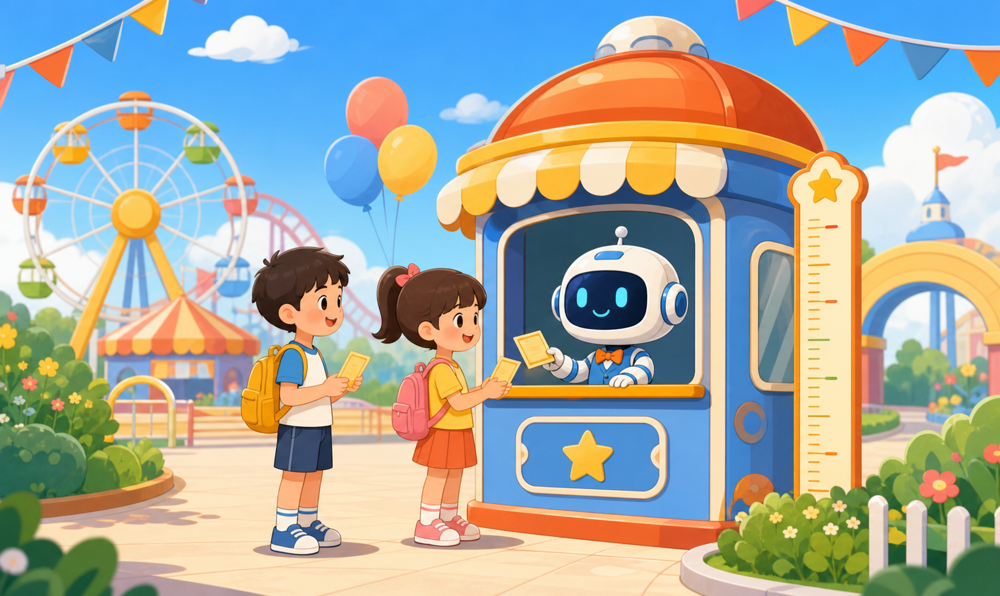

三课时跨学科微项目 · 小学五年级
为智慧乐园制定
票价公约
把生活规则写成算法，用数学证据检验方案，再用公平原则回应每一位游客。
3×40 分钟
5 个递进任务
12 名测试游客

身高
< 120cm？
是 → 半价票
否 → 继续判断
TRAINING ROUTE
从分支判断走向公共规则设计
先学会分支算法，再比较收入与优惠覆盖，最后用反例和公平证据修订方案。
120
本课程统一规则
基础规则统一使用“身高 < 120cm”
前四关用统一规则学习分支结构并完成跨学科探究；第五关在20元基础票、160元收入底线和至少5人优惠的约束下重新设计票价公约。
height < 120
边界值 120cm 不属于半价票
TEACHER VIEW
教师教学诊断中心
导入学生学习记录，查看知识掌握、边界覆盖、收入约束、公平证据与修订过程。
CAL结构化学习知识学习—闯关实践—过程记录—总结评价
掌握学习诊断薄弱点，推荐补学任务，再次评价
支架教学方向提示—关键线索—半成品示例三级递进
跨学科证据算法60%—数学25%—社会责任15%
学习者分析
对象：小学五年级，约10—11岁
基础：有生活规则经验，初次接触流程图和条件代码
设计回应：卡通情境、短步骤、即时反馈、无速度惩罚和三级支架